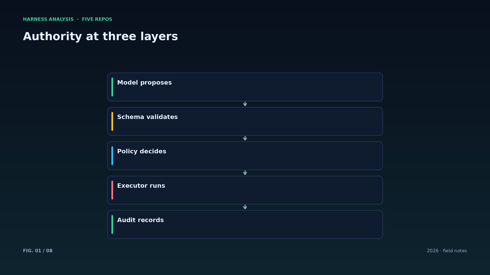
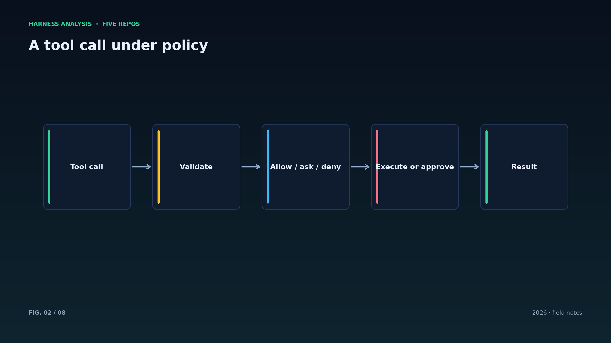
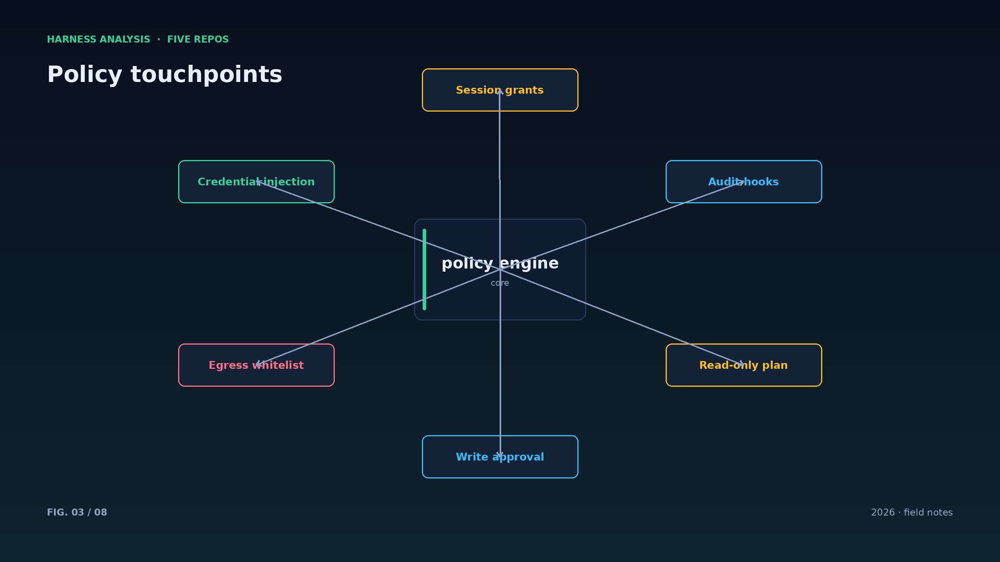
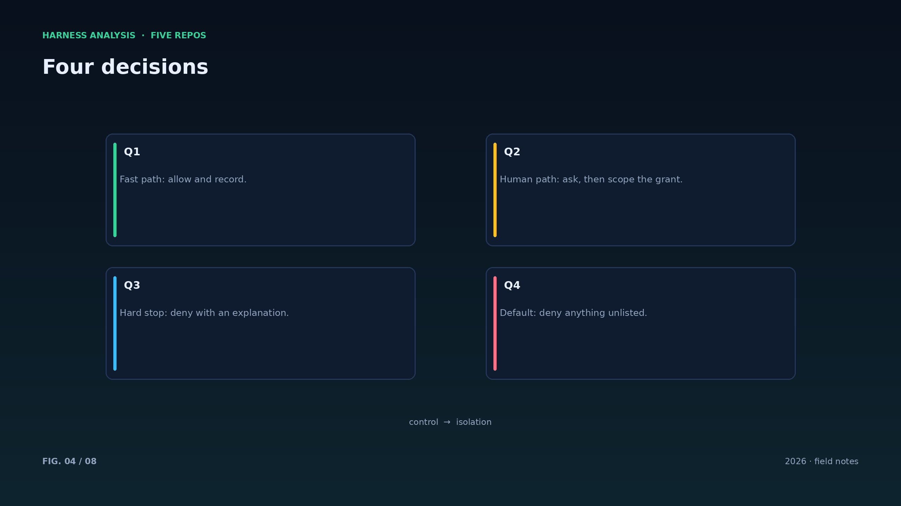
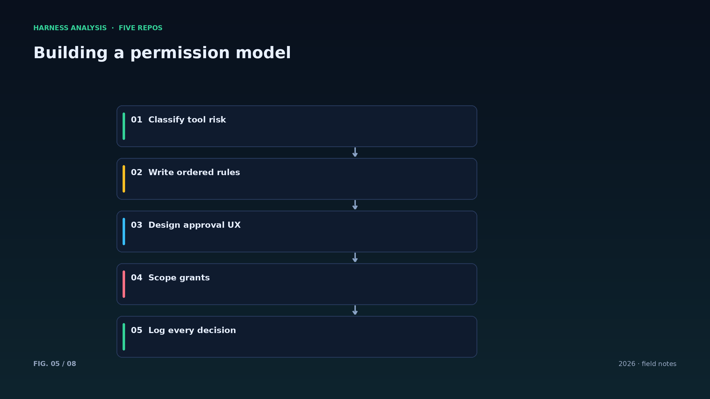
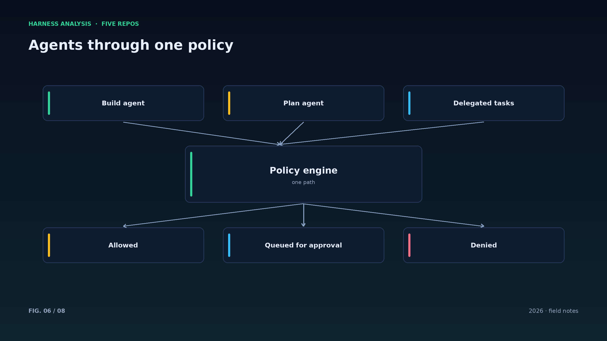
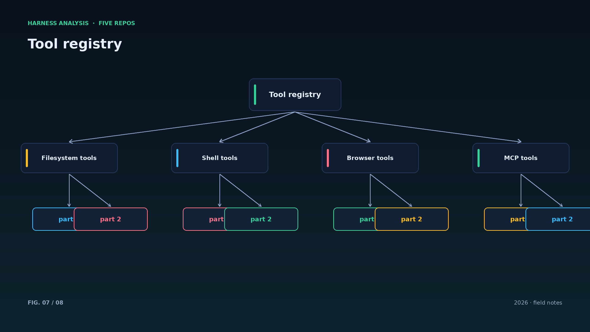
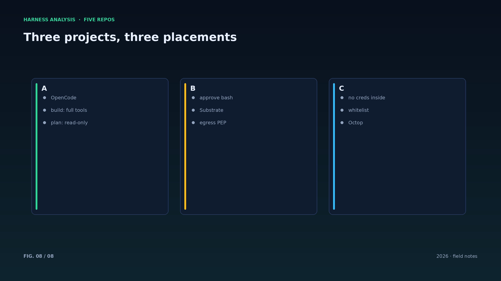

harness analysis · 03
工具与权限：从 OpenCode 的 plan agent 到 Substrate 的出口网关
Tools and Permission: From OpenCode's Plan Agent to Substrate's Egress Gateway
权限不是提示词能解决的问题。这一篇对照三个项目，讨论工具权限的三种落点：客户端、运行时与网络边界。
OpenCode 把权限放进产品形态：build agent 拥有完整工具，plan agent 默认只读，执行命令前必须获得批准。权限在这里是“角色的属性”，用户切换 agent 就切换了能力边界。
Substrate 把权限推到网络边界：沙箱内的 actor 默认不能出网，出站请求由 egress 网关代理，凭据在网关注入。权限在这里是“基础设施的属性”，不依赖 agent 遵守任何规矩。
Octop 把权限收进运行时：工具审批、shell 命令白名单、PII 脱敏都在单进程里完成。权限在这里是“平台的属性”，管理员配置一次，所有 agent 生效。
三种落点各有代价：客户端权限体验最自然但可被绕过；运行时权限集中但需要维护规则；网络边界最强但会限制合法能力。成熟的 harness 通常三者叠加：角色给默认值，运行时做检查，网络做兜底。
审批体验决定制度能否落地：一次点击批准比弹窗轰炸有效；把“最近批准过的同类操作”做成会话级授权，既不破坏最小权限，也不至于让用户崩溃。
规则要可解释：每条 deny 都要能告诉模型原因与替代方案（例如允许读取 workspace 内文件），否则模型会反复尝试被拒的操作，白白浪费步数。
权限的三层落点——角色、运行时、网络——最好在同一个策略语言里描述，否则三套规则迟早互相矛盾。哪怕实现分散，配置入口要统一。
审计要让“拒绝”可复盘：记录谁在什么时间拒绝了什么请求、依据哪条规则。没有这条记录，权限系统就只是黑箱。
对 agent 来说，权限错误应该是“可学习的”：告诉它哪条规则拦住了它、什么操作是被允许的替代路径，它才有机会自己修正。
Architecture figures








ENGLISH
Tools and Permission: From OpenCode's Plan Agent to Substrate's Egress Gateway
Permission is not a prompt problem. This piece compares three placement points for tool authority: the client, the runtime and the network boundary.
OpenCode places permission in the product shape: the build agent holds full tools, the plan agent is read-only by default and must get approval before running commands. Authority is a property of the role; switching agents switches the boundary.
Substrate pushes permission to the network edge: actors inside the sandbox cannot reach the network by default; outbound calls go through an egress gateway that injects credentials. Authority is an infrastructure property that does not rely on the agent behaving.
Octop keeps permission inside the runtime: tool approval, shell allowlists and PII redaction all happen in the single process. Authority is a platform property configured once by the administrator.
Each placement has a cost: client-side authority feels natural but can be bypassed; runtime authority is centralized but needs rule maintenance; network authority is strongest but constrains legitimate capability. Mature harnesses stack all three: roles set defaults, the runtime checks, the network backstops.
Approval UX decides whether the policy survives contact with users: one click beats popup storms, and session-scoped grants for recently approved operations keep least privilege without exhausting the operator.
Roles, runtime and network are three placements of the same policy; describe them in one language or the three rule sets will eventually contradict each other. Implementations may differ, the configuration entry point should not.
Audit must make refusals reviewable: who denied what request, when, and under which rule. Without that record a permission system is just a black box with good marketing.